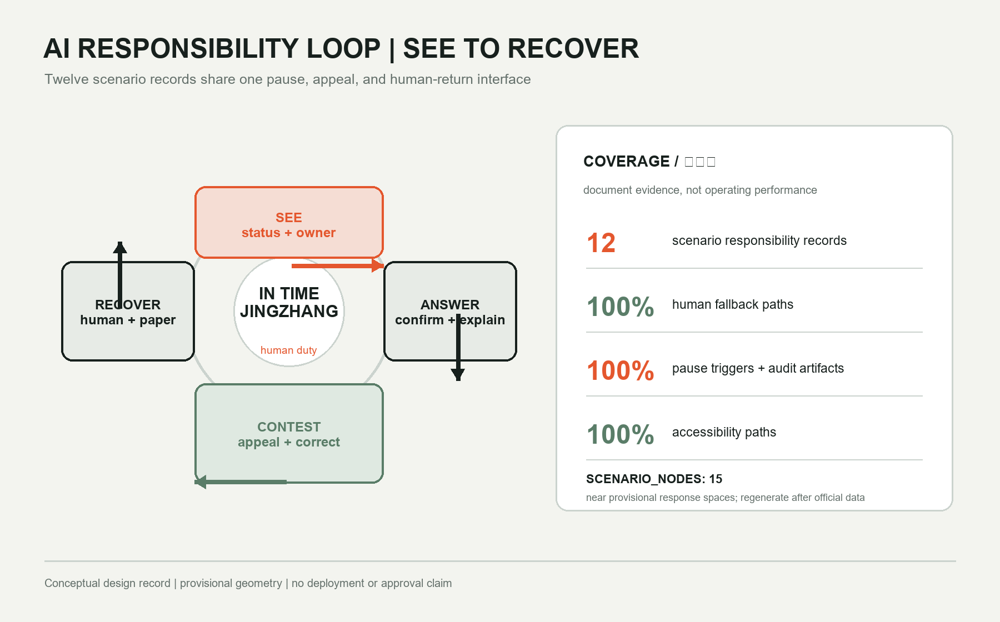

01
VALIDATE
Zhongzhiyuan
Open Test Signal Tower
Making AI response time a civic responsibility

The 43.6 km² coordinated research area addresses the ecosystem, the 11.4 km² overall design area addresses renewal and public space, and the 368.4 ha key-area scope tests three detailed prototypes.

Open Test Signal Tower
Human Answer House
Civic Handover Hall

One north-south response spine, six east-west links, three response rooms, and four response gates. Twelve building prototypes and eight renewal types test spatial relationships only; conceptual alignments are not road redlines, bridge or tunnel designs, or engineering conclusions.

Low-speed robot crossing
Multilingual wayfinding co-translation
Edge-compute energy return
Public-service takeover drill
Talent-service assistant
Accessible heritage narration
Night-route companion
Community-space booking
Local-shop translation
Environmental stewardship
Public-form explanation
Event-flow advice

Publish the service state and the accountable owner.
A person confirms and explains; an automatic reply is not a final decision.
Physical, telephone, and paper channels support correction and appeal.
Return to human, paper, or no-account paths when a dispute or failure occurs.
Coverage is documentation coverage, not operating performance. Nodes sit near provisional response spaces and must be regenerated when official data arrives.

See sources.json for provenance, assumptions.json for gaps and recalculation triggers, visual/assets/ai-responsibility-matrix.json for responsibility fields, visual/assets/scenario-nodes.json for explanatory nodes, and the three matrices for complete task, standard, and depth coverage.
Displayed values match metrics.json. Final status is controlled by self_check.json and participant_preflight.py.